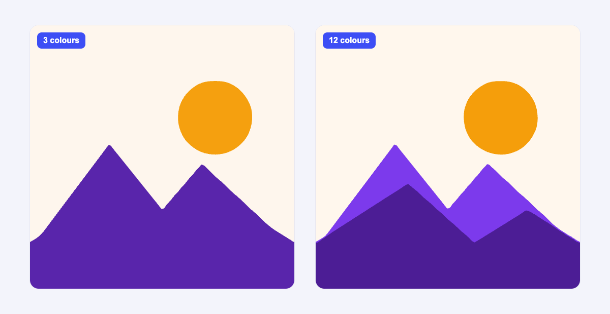

Best Settings for Clean SVG Tracing (Colours, Detail, Noise)
For clean SVG tracing, set colours to what you can actually see (2 for line art, 2–6 for logos, 12–24 for photos), use High quality for small text, raise speckle removal for JPGs and scans, keep noise smoothing at 0–1 for sharp graphics, and lower the corner angle for text and geometric shapes. Compare at 400% zoom and aim for the fewest paths that still look right.
Automatic tracing gets most images close to perfect, but the last ten percent comes down to a handful of settings. Understanding what each one does — and which to change first — turns a blotchy, oversized SVG into a clean, compact vector. This guide explains every setting in our PNG to SVG converter, gives recommended values for common image types and shows a quick workflow for tuning.
Which setting matters most?
The number of colours matters most, because every extra colour adds more regions, more edges and more paths to the SVG. Get the colour count right first, then adjust speckle removal, detail, smoothing and corners. Most problems — halos, blotches, huge files — are fixed by the colour count alone.
Recommended settings by image type
| Image | Type | Colours | Quality | Smoothing | Speckle | Corner |
|---|---|---|---|---|---|---|
| Flat logo (PNG) | Logo | Exact count | High | 0 | 4–10 px | Low |
| Logo (JPG) | Logo | Exact count | High | 0–1 | 8–16 px | Low |
| Cartoon / clip art | Logo | 8–16 | High | 0 | 6–12 px | Medium |
| Line art / signature | Sketch | 2 | High | 0 | 4–8 px | Medium |
| Photo (poster style) | Photograph | 12–24 | Medium–High | 1–2 | 4–8 px | High |
| Cut file / stencil | Silhouette | 1 | Medium | 1 | 10–20 px | Medium |
Colours: how many should you use?
Use the number of colours a person would name when looking at the image — and no more. A navy-and-orange logo on white is three colours. Limiting the palette forces anti-aliased edge pixels into the real colours, which removes halos and keeps the file small. The converter suggests simplified palettes from 2 to 16 colours; click one to compare. For photos, 12–24 colours give a pleasing poster effect, and beyond about 32 the file grows quickly with little visible gain. Read more in How Many Colours Should You Use When Tracing?

Quality and detail: how much is enough?
Use High quality and higher detail for small text and thin lines, and lower values for simple shapes, icons and smaller files. The quality preset controls the working resolution (up to 1,700 pixels on the longest edge at High) and nudges detail and speckle values. The detail slider controls how closely curves follow the pixel edges: higher keeps more fine features but adds nodes; lower produces smoother, simpler curves.
Noise smoothing: when should you use it?
Turn noise smoothing on for grainy photos, phone pictures and blurry scans, and leave it at 0 for clean digital graphics. Smoothing blends neighbouring pixels before tracing, merging grain into flat areas. On crisp logos it can soften small text, so use it only when you see noise.
Speckle removal: how big?
Set speckle removal just high enough that stray dots disappear but small real details, such as the dot on an "i", remain. The value is the minimum size, in pixels, of a shape that is kept. JPGs and scans need higher values (8–16 px) because of compression noise and paper texture; clean PNGs need less (4–8 px). Cut files benefit from high values because every speck becomes a piece to weed.
Corner angle: sharp or smooth?
Lower corner angles keep corners sharp, which suits text and geometric logos; higher angles round corners into smooth curves, which suits organic shapes and photos. If a square logo comes out with slightly rounded corners, lower the angle. If a hand-drawn shape looks jagged, raise it.
A five-minute tuning workflow
- Upload and let auto-detect choose the type and preset.
- Set the colour count (try a suggested palette first).
- Zoom to 400% on the trickiest area — small text, thin lines or fine detail.
- Adjust speckle removal until stray dots are gone.
- Adjust detail and corner angle until edges look right.
- Check the stats: fewer paths for the same look is better.
- Remove or recolour colours, then download.
How do you know the result is good?
A good trace looks right at 100% and 400% zoom, has no halos or specks, and uses as few paths as possible. As rough guides, a simple logo often needs a few dozen paths and a few kilobytes; a detailed illustration may need hundreds; a traced photo can reach thousands. If a photo SVG ends up larger than a quality JPG and you only need it on screen, keep the JPG.
Fixing common problems
| Symptom | Change |
|---|---|
| Halos around shapes | Fewer colours |
| Blotchy flat areas | Fewer colours, more smoothing |
| Tiny specks | More speckle removal |
| Missing thin lines or dots | Less speckle removal, more detail |
| Rounded corners on text | Lower corner angle |
| Jagged organic edges | Higher corner angle, lower detail |
| File too large | Fewer colours, lower quality preset |
For finishing touches in a vector editor, see How to Clean Up a Traced SVG.
How do settings differ for different sources?
The source of an image matters as much as its content: clean digital files need gentle settings, while scans, phone photos and screenshots need more clean-up.
- Digital exports (PNG from a design app): sharp edges and exact colours — use the exact colour count, smoothing 0 and low speckle removal.
- Website images (often JPG or WEBP): compression noise around edges — fewer colours and higher speckle removal.
- Scans of printed material: paper texture and halftone dots — smoothing 1, higher speckle removal, and boost contrast before uploading.
- Phone photos of artwork: uneven lighting and perspective — crop, straighten and increase contrast first, then use smoothing 1–2.
- Screenshots: crisp but often small — use High quality so small text gets enough working resolution.
Do the settings change for cutting machines and print?
Yes — cut files favour fewer colours, larger speckle removal and smoother curves, while print artwork can keep more detail. Every separate shape in a cut file is a piece someone has to weed, and every node is a direction change for the blade or laser, so simplicity pays off. For print, the SVG is rendered by the printer at full resolution, so extra detail is visible and worth keeping. For websites, balance detail with file size, since every path adds bytes to download.
Frequently asked questions
What are the best settings for a logo?
Logo type, the exact number of colours, High quality, smoothing 0, speckle 4–10 px and a low corner angle.
Why does my SVG have so many paths?
Too many colours or too little speckle removal. Reduce the colour count first.
Should I use High quality for everything?
Use High when small details matter. Medium or Low produce simpler, smaller files for bold shapes, icons and cut files.
Do these settings apply to other tracing tools?
Yes. Inkscape and Illustrator use similar concepts — colours or scans, detail or paths, noise or speckles, and corners — under slightly different names.
Summary
Start with the colour count, then tune speckle removal, detail, smoothing and corners while comparing at high zoom. Aim for the fewest paths that still look right, and your SVGs will be clean, compact and easy to edit.
We build free, privacy-first tools for converting images to vectors and write practical guides for designers, crafters and developers. Published November 21, 2026.
Ready to try it? Convert your image to SVG for free.
Open the converter